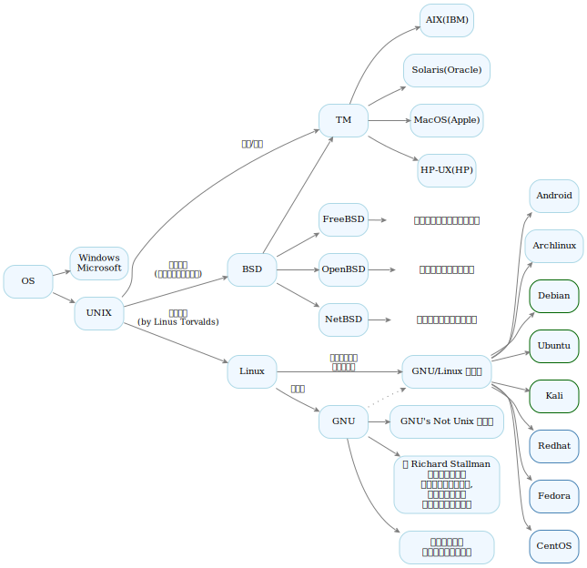
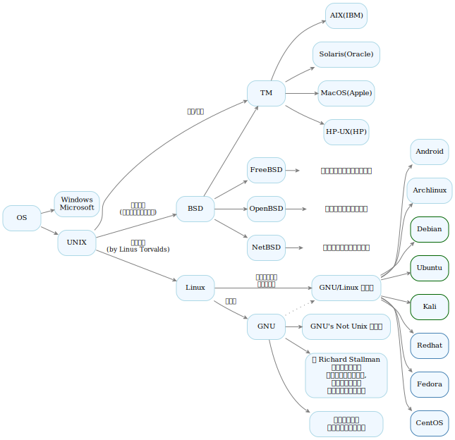

其他
1 Junit
| 注解 | 解释 |
|---|---|
| @Before | 在每个测试方法运行前执行的方法 |
| @After | 在每个测试方法运行后执行的方法 |
| @BeforeClass | 在类中所有测试运行之前运行的方法 |
| @AfterClass | 在类中所有测试运行完毕后运行的方法 |
| @Test | 测试方法 |
| @Ignore | 忽略掉本测试方法 |
2 操作系统历史 (Operate System History)

| 注解 | 解释 |
|---|---|
| @Before | 在每个测试方法运行前执行的方法 |
| @After | 在每个测试方法运行后执行的方法 |
| @BeforeClass | 在类中所有测试运行之前运行的方法 |
| @AfterClass | 在类中所有测试运行完毕后运行的方法 |
| @Test | 测试方法 |
| @Ignore | 忽略掉本测试方法 |
